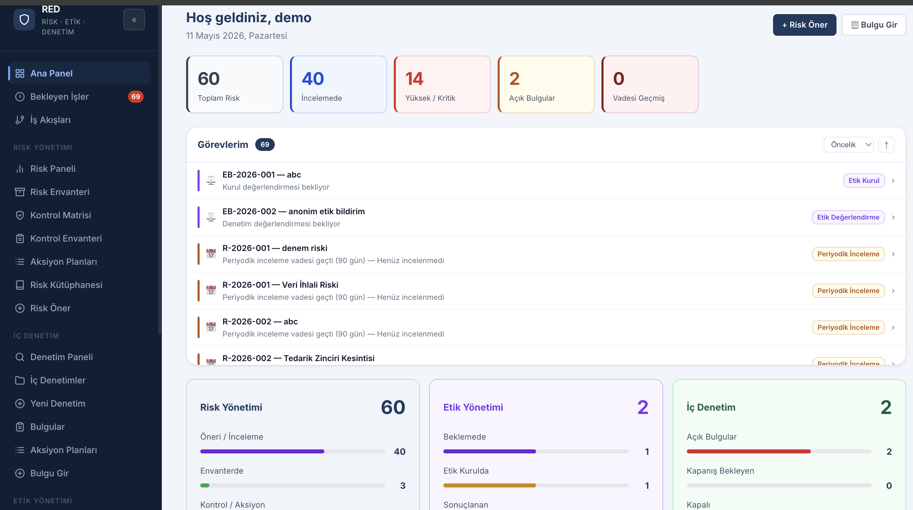
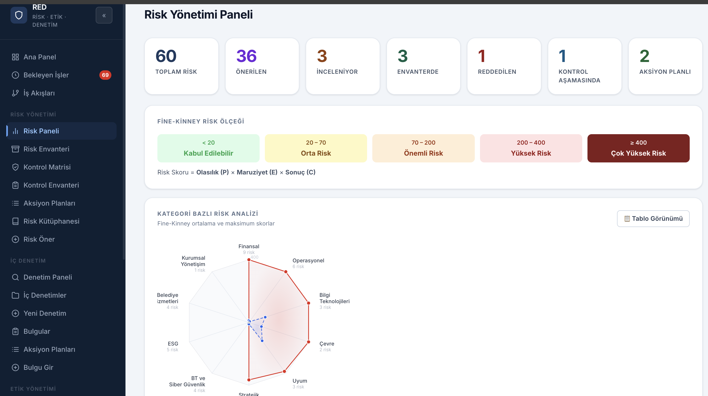
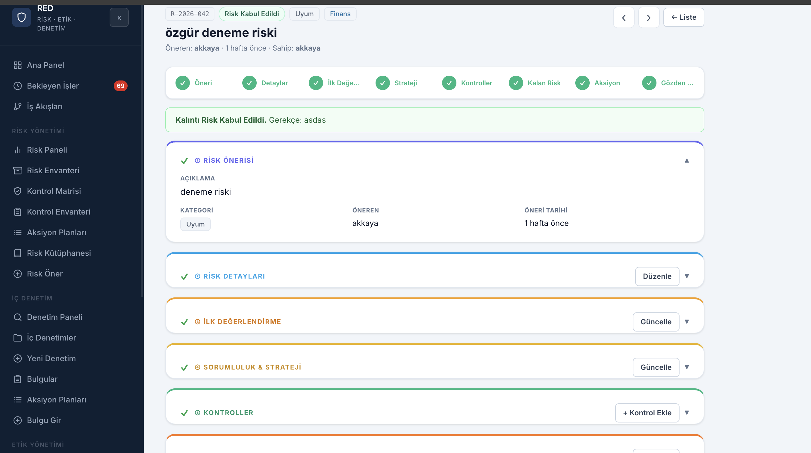
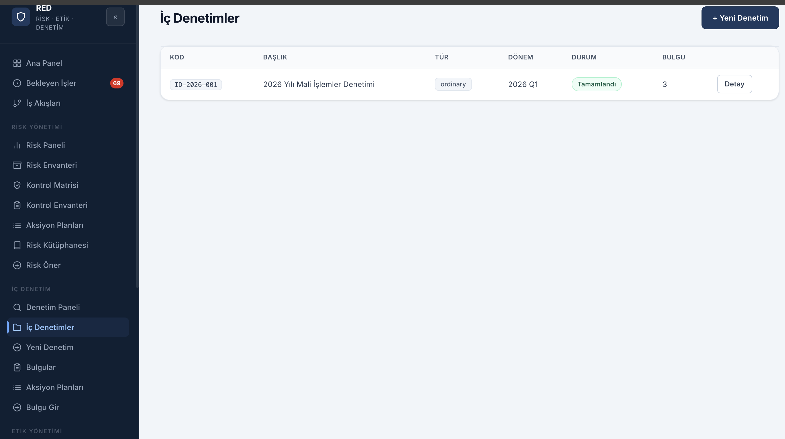
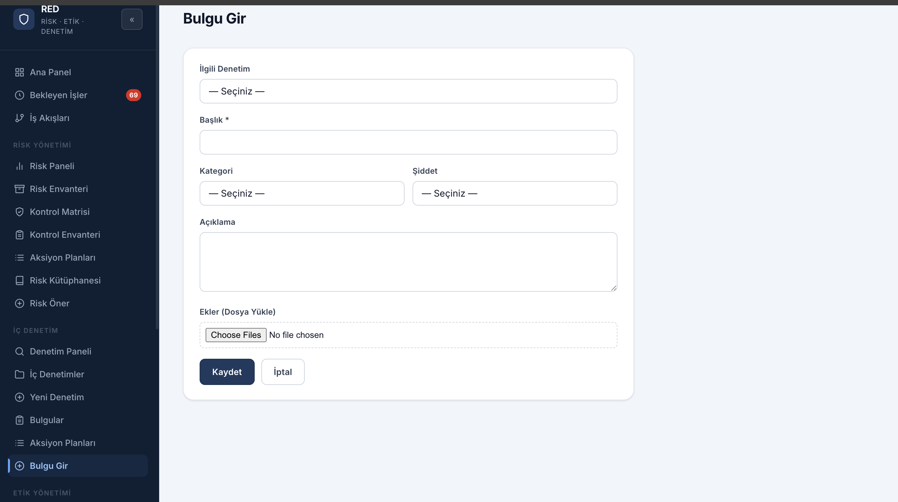
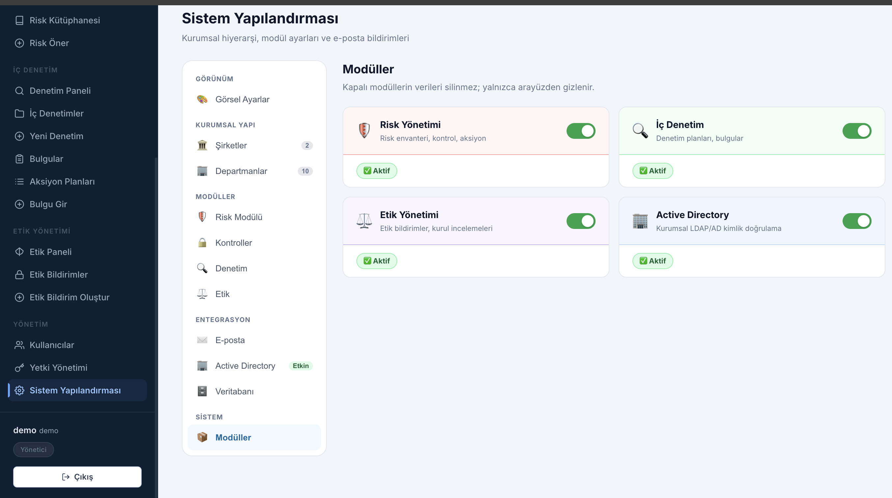

KOBİ ölçeğindeki iç denetim birimleri için yazdım. Açık kaynak, ücretsiz. Kodu GitHub'da; isteyen kurar, isteyen kendi kurumuna göre uyarlar.
// neden yazıldı?
Küçük ve orta ölçekli işletmelerin iç denetim birimleri çoğunlukla birkaç kişilik ekiplerden oluşur. Bulgu takibi Excel'de, risk kaydı ayrı bir dosyada, etik ihbar mekanizması ya hiç yoktur ya da e-posta kutusuna bırakılmıştır.
Bu durum bir sorun değil, kaynak gerçeği. Büyük kurumların lisanslı GRC yazılımlarını satın alacak bütçeleri yok. RedZone bu boşluk için geliştirildi: karmaşık değil, sade; pahalı değil, açık kaynak.
Bir ürün değil, bir araç. Kullanılırsa iyi, eleştiri gelirse daha iyi.
Son bir not: Profesyonel bir yazılım geliştirme geçmişim yok. RedZone Claude ile geliştirildi — fikri ben getirdim, alan bilgisini ben koydum, kodu o üretti. Bunu saklamak yerine açık söylemeyi tercih ediyorum; çünkü bu projenin kendisi de aslında "alan uzmanı + yapay zeka" iş birliğinin ne yapabileceğini test etmenin bir ürünü.
// içerik
Şu an çalışan modüller.
Denetim bulgularını kaydet, sorumlu ata, termin belirle, kapanışı takip et.
Fine-Kinney yöntemiyle risk puanlama, renk kodlaması ve risk sahibi atama.
Her riske kontrol önlemi ekle, etkinliğini değerlendir.
Çalışanlar login olmadan anonim bildirim yapabilir. Vakalar gizlilikle takip edilir.
İç denetim programı oluştur, denetimleri planla ve sonuçlandır.
Yönetici, denetçi ve görüntüleyici rolleriyle erişim kontrolü.
// ekran görüntüleri
Uygulamanın farklı modüllerinden.

Risk İş Akışı
Risk Detayı
İç Denetimler
Bulgu Girişi
Sistem Yapılandırması
Modül Yönetimi// kurulum
Kendi sunucunuza kurabilirsiniz. Kurulum talimatları GitHub'daki README dosyasında.
// github
Bir hata buldunuz, eksik bir şey gördünüz ya da farklı bir ihtiyacınız var? GitHub'da issue açabilirsiniz.
GitHub →